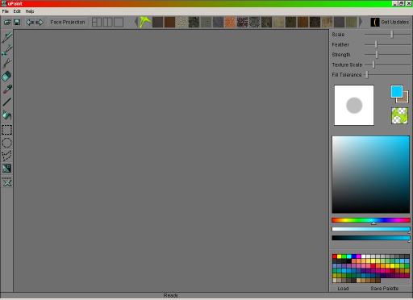
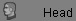
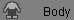
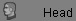
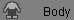

UPaint
UPaint is a graphics application used to help create the textures for the character models in UT2003.
Installation
To install UPaint insert UT2003 CD 3, go to the extras → UPaint and click setup.exe. It will then copy the UPaint program and the meshes, textures and characters from the CD to your PC, by default to the Program Files\Right Hemisphere\UPaint folder.
Patches
List of features for patch 1.0.3: http://www.righthemisphere.com/forum/showthread.php3?s=b34cac69156dd0e929fa9d25ada6e843&threadid=891 (but it doesn't give a file link!  )
)
Changes in UPaint Patch 1.0.3
- Improved (faster) CD detection for the UPAINT (3) CD.
- Progress dialog bug-fix for skin copying
- Wording and clarity of dialogs improved.
Changes in UPaint Patch 1.0.2 (included in 1.0.3)
- Fixed Win98/WinMe bug (aka: can't open file bug)
- Fixed crash with saving
- Skins are now saved separately, having a UTX and UPL per character
- These two files are all you need to trade characters.
- However you can trade UPP and UPT files so you can continue to paint on them.
- Now to delete a skin, just delete its UTX and UPL files.
- UTX files are now compressed
Interface
It is a pretty straight forward tool to use, it loads up with a toolbar on the left, a few textures along the top (used in by the texture paint tool) and some colours on the right of the screen,

The blank interface on UPaint startup |
you can then either open up one of the characters from UT2003 pre-textured (*.upp filename found in the upaint/characters folder) or a plain blank character model (*.psk filename found in the upaint/meshes folder)
If you load up a pre-textured model, it will by default load the head texture in 2D in the top left section, the body texture in 2D at bottom left and a 3D rendered image on the right showing how the character will appear in UT2003.
If you choose to load a plain blank character instead, the head and body texture windows on the left will be empty and you will need to import a texture into each to start painting on the model.
![[doog_modelloaded]](images/doog-modelloaded.png) Mesh (.psk file) loaded |
Importing textures
Supported image types you can import are as follows:
- BMP
- IFF
- JPG
- JPEG
- PNG
- PNM
- PIX
- RAW
- TGA
- TIF
- TIFF
- UPT
- PCX
To import a texture, click the box labeled 'Head' or 'Body', depending on which item you wish to import, then go to file → import texture and browse to upaint/textures, here are a set of textures used by the default characters from UT2003, helpfully labelled with head and body in the names so you can see what's what. Click a filename, then click open and it will load into the Head or Body section and also display on the 3D image.
![[doog_skinsimported]](images/doog-skinsimported.png) Skins for Head and Body imported |
Notice all the textures in the Upaint/textures folder are .PNG files? This is so that they can use the Alpha channel to tell UT2003 which parts of the texture should be transparent. More on that later 
You don't have to use these textures though, by all means import your own artwork, the program will allow you to import files of any size or dimension. However, as I found to my dismay, it wont let you export the finished product to UT2003 unless your textures are powers of 2. I find textures of 1024*1024 work fine though, and are the same dimensions of the ones found in the UPaint/textures folder. To fix this, open your image in PSP or any other graphics program and resize it. Once done, import it again as above.
Moving around and stuff
Right now you've loaded the textures for your skin, you might want to edit them so they look better. The simplest way to do this is by using the color paint brush tool (top tool on the left beneath the open files icon) and simply drawing on one of the 2D textures on the left hand side, you will see immediate results on the 3D model, unless of couse, you just painted on the back of said model. To check this you'd want to rotate the model.
Since you have selected the color paint brush, clicking in the 3D view at the moment will just paint on the texture (I'll get to that later) but since you don't want to do that, look above the 3D view. There's some icons there.
They are:
![[doog_perspectiveicon]](images/doog-perspectiveicon.png)   View icons
  View icons
Choose which view you want this window to show, choices are Head. Body or Perspective (3D)
![[doog_Left]](images/doog-left.png) Left
Left
Switches the 3D view so that the model faces to the left
![[doog_Right]](images/doog-right.png) Right
Right
Switches the 3D view so the model faces to the right
![[doog_Front]](images/doog-front.png) Front
Front
Switches the 3D view to look at the model face on
- Back
Switches the 3D view to look at the models back (hey, isn't this where we want to look right now?)
- Top
Switches the 3D view to look at the model from the top
- M? Underneath
Switches the 3D view to look at the model from underneath
![[doog_Perspectiveselected]](images/doog-perspectiveselected.png) Perspective (shown selected)
Perspective (shown selected)
Changes whatever view you have so that instead of the model being shown flat, it has depth. Click it to see what I mean.
![[doog_projectionpaint]](images/doog-projectionpaint.png) Projection paint
Projection paint
When you click it, a little loading bar appears for a second or so, and then you can use the paint brush in the Perspective view, to paint directly onto the mesh. Click it again to turn this mode off.
- Rotate
This is the doohicky we want to click so that left click and draging around in the 3D view will rotate the model around.
![[doog_zoom]](images/doog-zoom.png) Zoom
Zoom
Draw a box in any of the three views and that section will be zoomed in.
![[doog_pan]](images/doog-pan.png) Pan
Pan
Hold left mouse button and drag around in any of the three views to move the image around, usefull in 3D view if you don't want it rotating all the time.
![[doog_fit]](images/doog-fit.png) Fit
Fit
makes the View zoom out (or in if you zoomed out a lot already) to make the model fill up the window and be fully visible.
![[doog_wireframe]](images/doog-wireframe.png) Wireframe
Wireframe
Displays the models wireframe mesh superimposed over the texture (handily as I just this second noticed, each 2D view also has this icon which unwraps the mesh on the texture so you can see what bit's you're drawing on easier)
![[doog_lit]](images/doog-lit.png) Lit
Lit
Turns off model lighting (removes shadows) - it's on by default.
Another thing I found out while playing, with the rotate tool selected, while left dragging rotates the model, right dragging zooms it in and out and holding both mouse buttons and dragging pans it left-right, up-down. If you have a third mouse button (or wheel) holding that will also pan around while using the mouse wheel roller will zoom in and out. (pan and zoom both work in the 2D views too)
External Links
- Anytime you need help on trying to get UPaint to work, you can always stop by the [official UPaint forums]
Related Topics
Discussion
Githianki: I'd like to edit this page a bit but I need to figure out some stuff first. Until then here is an official link to the latest Upaint:
http://ut2003master.epicgames.com/files/UPaint-patch-1.0.2.exe
Note that I had trouble as did others with an early file downloaded from there, but that supposedly the installer has been fixed by Right Hemisphere (the makers of Upaint). Whether this change has actually occured or been propagated to the Epicgames server (which that link is to) is unconfirmed (by me at least). The forums Kirin has linked are somewhat useful but RH doesn't seem to update people much as to what is going on.
Note someone should link ChiQ's shader tutorial from here, if they know the link.
Noticed the Projection paint image button is missing? I didn't touch that (or anything BTW) so maybe the image is missing?
Doogle: Thanks, I missed that one when uploading, not been here in the past couple of days due to bein ill so I'll do some more for this after work tomorrow
mrbond113: Any chance that this would work for UT, too?
Radiosity: No, because UT doesn't use .psk files, as it uses vertex animation not skeletal (with the exception of the later skeletal support that was added, but that still works differently to the UT2003 onwards method).
Radiosity: Anyone using UPaint should be aware that alpha channels aren't retained when it exports to the game, so characters such as Satin or Sapphire will look kinda weird.
Bob_The_Beheader: Hmm...Yeah I was wondering about that. I was kinda freaked out when their faces were all messed up. Sapphire is, in my opinion, the hottest character in the game, and it was dissapinting that I couldn't make a skin of her in more skimpy attaire.